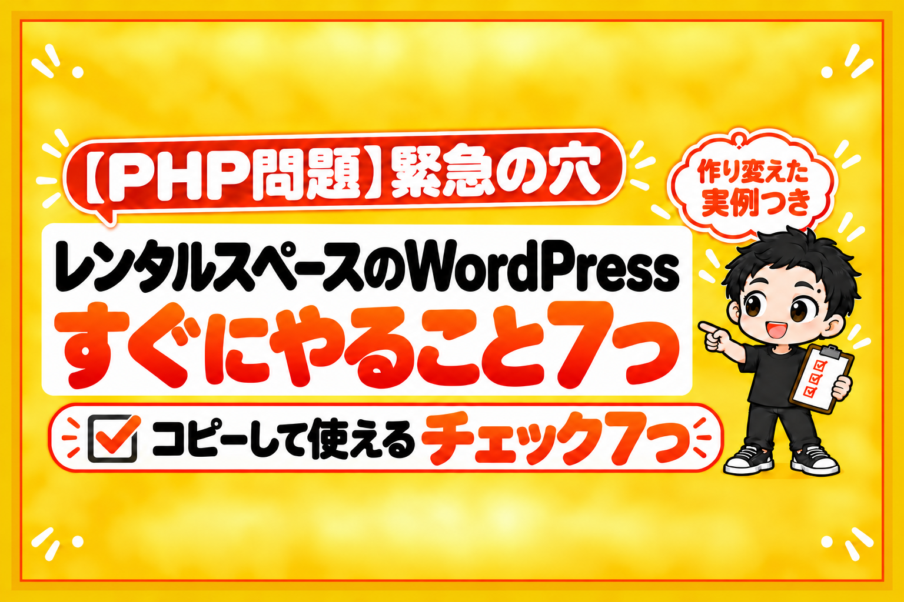

10月21日の夜、高市首相のXのアカウントが、今夜のうちに対応してほしいと「大至急のお願い」を出しました。
相手は、ホームページを動かしている「PHP」というしくみの、緊急の穴です。
高市早苗さんのXのポストより(2026年10月23日に撮影)

レンタルスペースのホームページ(HP)を、WordPressで作っている方。
WordPressは、このPHPで動いています。
だから、あなたのHPも対象です。
結論から言うと、今週やることは7つです。
その中で、いちばん効くのは7つ目の「PHPのいらないHPにする」でした。
例えば、ぼくの店のHPも、点検したら穴が見つかりました。
いま、WordPressをやめて、作り変えました。
この記事で分かることは3つです。
- 何が起きたのか(むずかしい言葉なしで)
- レンタルスペースのHPが、なぜ関係あるのか
- 今週やること7つ(チェックリスト)
何が起きたのか
PHPは、たくさんのHPの裏で動いているしくみです。
WordPressも、PHPで動いています。
10月21日、PHPを作っているチームが、緊急の穴を2つ直した新しい版を出しました。
穴の中身は、ログインしなくても、外からHPのサーバーを好きに動かされてしまう、というものです。
危なさの点数は、10点満点で9.2でした。
PHPの公式は、すべての利用者に「直ちに更新を」と呼びかけています。

直った版は、8.5.12・8.4.27・8.3.36・8.2.35の4つです。
8.1より古い版は、ふつうの更新の対象から外れています。
穴をねらう動きも、すぐに始まりました。
Cloudflare(HPを守るサービスの大手)の最高経営責任者は、ねらう動きが公表から2時間で数十万件、そのあと数百万件に増えたと報告しています。
レンタルサーバーの会社も、緊急のメンテナンスをしました。
レンタルスペースのHPが、なぜ関係あるのか
レンタルスペースのHPには、こんなものが入っていることが多いです。
- 予約や会員のプラグイン(お客さまの名前・メールアドレス)
- お問い合わせフォーム(お客さまからのメッセージ)
- 何年も前に入れて、止めたままのプラグイン
HPを乗っ取られると、ページを書きかえられるだけではすみません。
お客さまの情報が外に出たり、あなたのHPがほかへの攻撃の「踏み台」に使われたりします。
セキュリティの専門家も、WordPressでHPを動かしている人は、全員が対応するべきだと呼びかけていました。
プラグインではなく、PHPそのものの穴なので、プラグインの更新では直りません。

そして、WordPressで作ったHPを直すのは、HPの持ち主です。
誰かが代わりに直してくれる、ということはありません。
例えば、ぼくの店で見つかった3つ
ぼくの店のHPも、WordPressで作っていました。
点検したら、3つ見つかりました。
- PHPの版が古かった: 2つのHPが7.4のまま。サーバー会社が「直しました」と出したのは8.2〜8.5だけで、7.4はその外でした
- 使っていないお客さまの情報が残っていた: 予約は別のサービスに移したのに、WordPressの中に1,000人をこえる会員の情報が残っていました
- プラグインが古かった: 夏にサーバー会社から「このプラグインに穴があります」と警告が来ていたものも、更新されていませんでした
管理者に、見覚えのない人はいませんでした。
それでも、このままにはできません。
まず、PHPを直った版(8.3.36)に切り替えました。
お客さまの情報は、控えを取ってから消す準備をしています。
そして、WordPressをやめて、HTMLだけのHPに作り変えました。
レンタルスペースのHPがやる仕事は、3つだけ
守るものが「ページだけ」になる
作り変えると決めたのは、HPの仕事を書き出してみたからです。
- お店を見せる(写真・料金・アクセス)
- 予約サイトへつなぐ(予約ボタン)
- お問い合わせを受ける
予約は、予約サイトのしくみで受けています。
お問い合わせは、Googleフォームなどで受けられます。
つまり、レンタルスペースのHPには、PHPもWordPressも、もういりませんでした。
PHPを使わないHPなら、今回のようなPHPの穴は関係なくなります。
すぐにやること7つ(チェックリスト)
コピーして、上から順に確かめてください。
- あなたのHPがWordPressか確かめる(HPのアドレスの後ろに /wp-admin を付けて、ログイン画面が出ればWordPressです)
- サーバーの管理画面で、PHPの版を見る(8.5.12・8.4.27・8.3.36・8.2.35より古ければ、切り替える)
- 使っていないプラグイン・テーマを消す(止めているだけでは、ファイルは外から呼べます)
- 残すプラグインとWordPressを、最新にする(自動更新もオンに)
- 中にあるお客さまの情報を確かめる(使っていない予約・会員の機能なら、控えを取って消す)
- 管理者の一覧を見る(見覚えのない人がいないか)
- 次に作り直すときは、PHPのいらないHPにする
1〜6は、今週のうちに。
7は、時間ができたときで大丈夫です。
でも、毎回このニュースにあわてなくてよくなるのは、7だけです。
自分でやるのが不安な方は、サーバー会社の案内を確かめるか、HPを作った会社に相談してください。
これから作るなら、最初からPHPのいらないHPで
これからHPを作る方、作り直す方には、ぼくが作った「レンタルスペースの公式HPメーカー」もあります。
AIの質問に答えるだけで、予約ボタンつきの公式HPを、HTMLだけで作るツールです。
WordPressもPHPも使いません。
- 最初の質問は、予約サイトの掲載ページのURLだけ。店名・住所・設備・写真はAIが先に読み取ります
- 予約ボタンは、いま使っている予約サイトにつながります
- お問い合わせは、メール・電話・Googleフォーム・公式LINEなどから選べます
動かすのは、パソコンの中の作業まで任せられるAI(Claude CodeかCodex)です。

HTMLだけのHPにしても、ドメインやサーバーの管理はなくなりません。
それでも、守るものが「ページだけ」になるので、今回のような穴に追われることはぐっと減ります。
AIをどこまで使うかは、各サービスの規約を確かめたうえで、ご自身の責任で決めてください。
まとめ
PHPの緊急の穴。
レンタルスペースのHPを持っている方に伝えたいのは、この3つです。
- WordPressのHPは、PHPの穴の対象(プラグインの更新では直らない)
- 今週、PHPの版とお客さまの情報を確かめる(7つのチェックリスト)
- レンタルスペースのHPの仕事は3つだけ。PHPのいらないHPにすれば、次からあわてなくていい
今日の一歩は、これだけです。
サーバーの管理画面を開いて、PHPの版を1つ確かめてください。
あなたのHPは、何の版でしたか?
もしこれからレンタルスペースを始めるなら、1部屋目で黒字にするには1日何時間の予約が必要か、先に出してみてください。
無料の診断で、30秒で出せます。
診断のあとに、ぼくが物件を決めるときの順番を1日1通ずつ届けるメール講座(全8通)も受け取れます。

物件探しから、月いくら手元に入るかの計算、出店、撤退まで。23店舗の数字といっしょに、教科書にぜんぶ書いています。
レンタルスペース経営の教科書

販売価格は3部売れるごとに2,000円ずつ値上がりします（上限あり）。内容・最新価格は販売ページをご確認ください。
▼もう1つの副業、AI社員だけのeBay輸出店の実録🐹

▼ブログ(レンスペ×eBay、全記事まとめ)